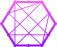

With +11 years in the field of Graphic Designer, who is fascinated by creative processes, innovation and new challenges. I believe that by joining the creativity of design with the efficiency of technology, it’s possible to create amazing and innovative solutions for our users. My professional experiences, whether remote or local, were totally related to my passion for design and technology.
What I Do
UI/UX Designer
Software Development
Graphic Designer
Soft Skills